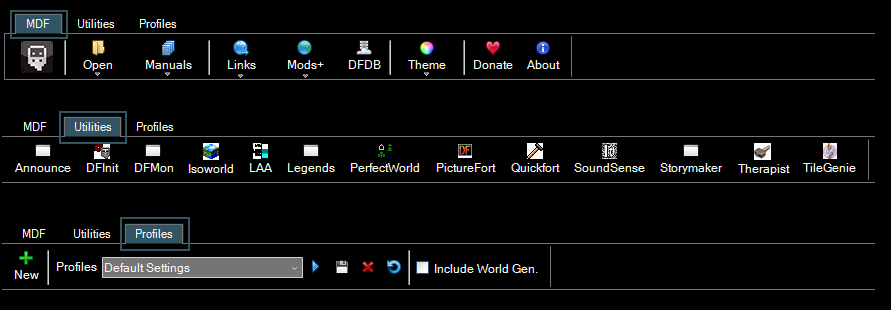
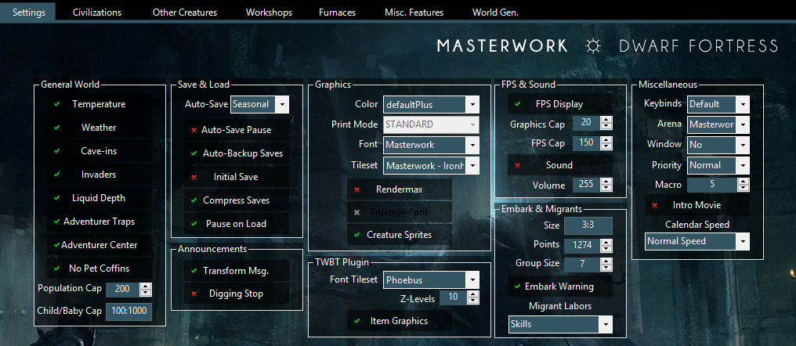
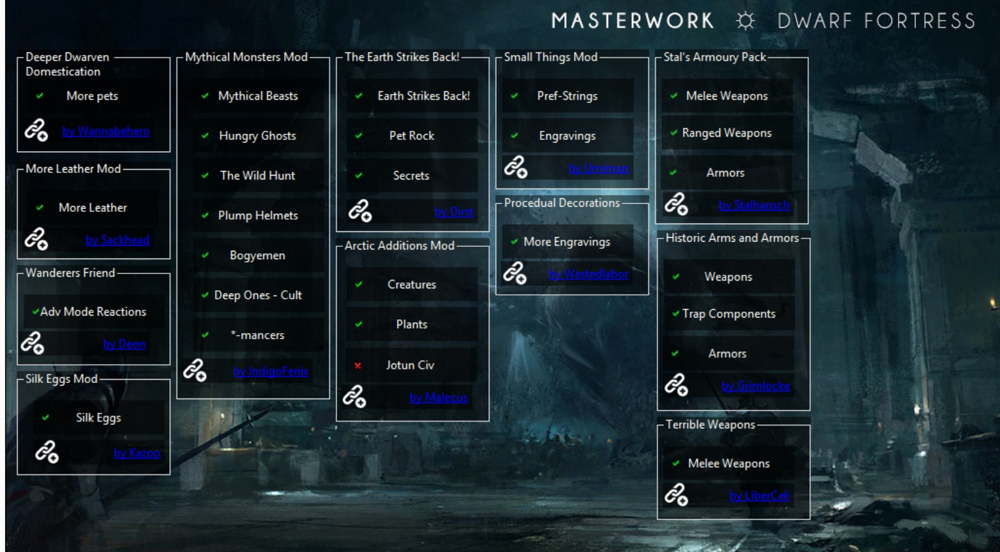
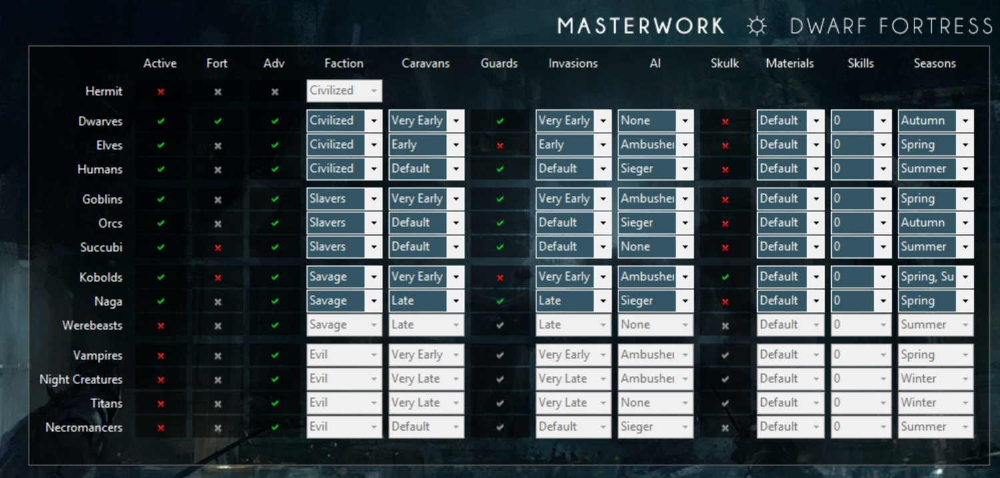
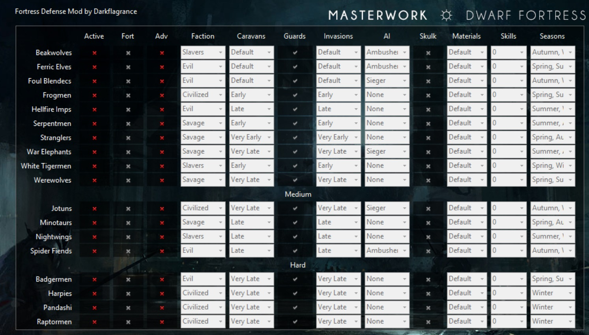
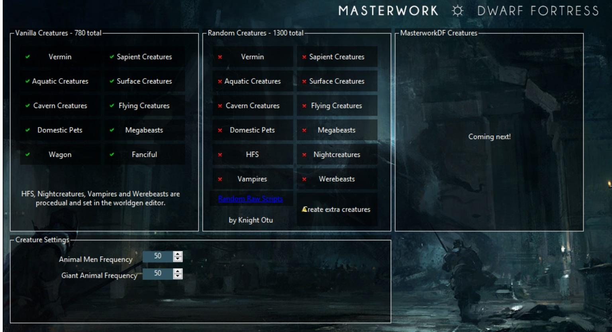

GUI
GUI stands for Graphical User Interface. In this case the Masterwork Dwarf Fortress.exe, a program that allows you to alter the mod. It includes a init editor, installing tilesets, links, all utilities that are included in the pack, a worldgen editor and settings that range from adding/removing single workshops to entire industries. It also allows to make the game harder or easier, change the factions and civs, and lets you decide what race to play. Every single button has a tooltip, so if you want specific information about a single setting, just hover your mouse over it.
It takes a few seconds to start up, as well as the newest version of .NET-Framework, and please run it in admin mode.
Lets have a look at the tabs first. MDF, Utilities and Profiles. MDF is full of misc features, you can start DF, open specific folders, the manual, links in the forum, find other mods, have a look at the awesome online item database DFDB, change the theme, get to the donate page and get some background info.
Utilities show icons and names of all included programs. Simply click on an icon, and the utility will start. Makes it easy to find everything.
Profiles allows to save/load your settings, or even import from other peoples settings, if they send them to you. You can also reset everything to default here.

The first page of the GUI is the init editor and the graphic settings. You can change temperature and weather, save and load settings, install from 25 different tilesets, change fonts and color schemes, FPS and embark group size. All changes that affect every race across every world.
Twbt Settings are advanced graphical settings. It adds unique item sprites, multi-z-level view up to 15 levels at once, and the tileset for the fonts.
A important unique settings is calender speed. All creatures still move at the same time, but you have more (or less) time between events, like caravans, sieges and migrants. It can be changed in a running fort as well, but you need to close DF and start it again.

The mods tab shows included minor mods by other authors. They always show the name of the mod, the name of the author and a link to the Bay12forum thread with more infos about them. Some of these mods will be enabled by default, others left off. Mix and merge as you deem fit. In the example below all mods are active, except for the Jotun civ. They are high-end invaders and better left to experienced players.
Since I did not write these mods myself, please give the feedback to the related author. I included a readme for each of these mods in the main folder.

Civ page sets the civilizations. You can completely remove civs, make them playable in either fort or adventure mode, change their alliances, determine how early they trade or attack, if their caravans have guards, how the AI behaves in sieges, what type of materials they bring, how high their combat skill is and in which season they are active. You can literally rebalance everything about a civ, and make groups and teams as you like. Legendary kobold siegers that save your babysnatching humans from the good warlocks? Can be done.

Invaders page offers the same functionalty, but for the included Fortress Defense mod. There are bonus races you can enable to get some extra Waaaghhh in there.

The creatures tab allows to add or remove creatures from the game. They are sorted by type like birds, aquatic, surface, caverns, megabeasts, etc... The options include almost all vanilla DF creatures, as well as 1300 randomly generated creatures, and the new modded creatures that are being added.

There are several "civ name" tabs; like Dwarves, Kobolds, Succubus, etc. There allow mod-settings specific to that race. Mostly its just to add or remove individual workshops. Some players like the large amount of options, while others prefer a simpler game. There pages are constantly being updated with every new features that is added to the mod. As an example, here the "Dwarves tab".

The last page is a world generator. It stands between the standard worldgen and the advanced worldgen. It has more option than standard, but you cant break the worldgen like the advanced one would allow. It should be relatively save to use this middle option, especially for players that havent meddled with world generation before. You can edit specific templates, or all at once. These settings can even be saved in the GUI profiles mentioned above.